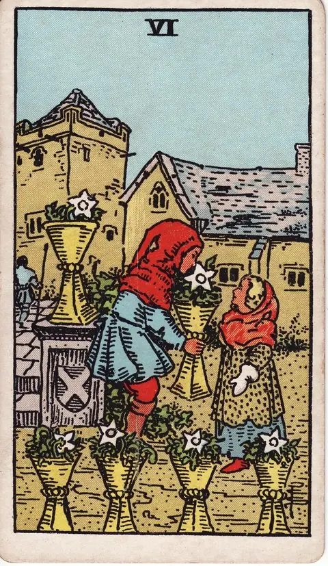

컵 · 타로 카드 백과사전
컵 6

그림: Pamela Colman Smith · RWS 덱 · Wikimedia Commons 원본·이용 조건
편집: 점집 · 해설 보완: 2026년 9월 30일
그림에서 읽는 상징
작은 인물이 다른 인물에게 꽃이 담긴 잔을 건네고 주변에도 꽃을 꽂은 잔들이 있습니다.
점집의 해석
익숙함과 기억 속의 호의로 읽습니다. 과거가 실제보다 좋게만 기억되는지 살피면서 지금도 이어갈 가치를 고릅니다.
역방향에서 돌아볼 점
옛 기준으로 현재의 사람을 판단하거나 추억에 머무르며 새 경험을 피하는지 돌아봅니다.
질문에 적용하는 예시
“오랜 친구에게 다시 연락하고 싶다면?”
함께했던 구체적인 기억 하나를 전하고 지금의 근황을 물어보세요. 상대가 예전과 달라졌을 가능성도 열어둡니다.
예시는 점집이 구성한 가상 상황입니다. 실제 상담 사례나 효과를 입증한 사례가 아닙니다.
해설 기준과 참고 자료
그림 설명은 라이더–웨이트–스미스 덱의 도상을 관찰한 내용입니다. 이어지는 해석·역방향 질문·실천 예시는 점집의 자기성찰용 설명이며, 원전의 예언 문구를 번역한 것이 아닙니다. 덱과 해석 전통에 따라 의미는 달라질 수 있습니다.
전통적 도상 설명 참고: A. E. Waite, The Pictorial Key to the Tarot. 점집의 편집 원칙 · 질문 만드는 법
아래 상황별 문장은 상징을 일상에 연결하는 오락용 해석입니다. 실제 사건·건강 상태·투자 성과를 예측하지 않습니다.
정방향
키워드: 그리운 추억 · 순수함 · 향수 · 포근한 옛 장면 · 다독이는 기억 · 온기 나눔
조언: 좋았던 기억에서 힘을 얻되 지금 이 순간도 함께 살아보세요.
연애운
솔로
첫사랑처럼 순수했던 감정이 다시 떠오르는 시기입니다. 옛 인연을 다시 만날 수도 있지만 지금의 마음도 살펴보세요.
커플
함께한 좋은 추억이 지금의 관계에 따뜻함을 더하는 시기입니다. 예전에 즐겨했던 데이트를 다시 해보는 것도 좋습니다.
재물운
소비
예전의 검소한 습관이 지금의 재정 관리에 도움이 되는 시기입니다. 옛 방식 중 좋은 것은 계속 이어가 보세요.
투자
자기성찰 키워드: 그리운 추억 · 순수함 · 향수. 이 리딩은 수익·손실이나 매매 시점을 예측하지 않습니다. 기대와 확인된 사실을 나누고, 비용·계약 조건·감당할 수 있는 손실을 실제 자료로 검토하세요. 카드의 방향이나 키워드를 투자 결정의 근거로 사용하지 마세요.
수입
한때 가깝게 지내던 사람에게서 반가운 벌이 소식이 전해지는 시기입니다. 옛 인연이 건넨 손길을 편하게 받아들여보세요.
취업운
구직
예전에 좋아했던 일을 떠올리며 방향을 다시 잡는 시기입니다. 초심으로 돌아가 자신이 원하는 것을 다시 확인해보세요.
이직
이전 직장에서의 좋은 경험이 새로운 자리에서도 힘이 되는 시기입니다. 과거의 노하우를 새로운 환경에 맞게 적용해보세요.
직장운
팀워크
예전 팀에서 통했던 손발이 지금 팀에서도 도움이 되는 시기입니다. 익숙한 협업 방식을 새 팀에 잘 적용해보세요.
개인성과
과거에 좋은 평가를 받았던 프로젝트의 접근법이 지금 업무에도 실마리가 되는 시기입니다. 그때의 성공 요인을 지금 상황에 맞게 응용해보세요.
사업운
창업준비
예전부터 품어온 아이디어로 창업하기 좋은 시기입니다. 초심을 잃지 않는 것이 사업의 든든한 기반이 됩니다.
운영중
초심으로 돌아가면 사업에 새로운 활력을 얻는 시기입니다. 처음 사업을 시작했던 마음을 다시 떠올려보세요.
학업운
시험준비
예전에 효과를 봤던 공부 방법을 되살리면 도움이 되는 시기입니다. 익숙한 방식으로 자신감을 되찾아보세요.
진로고민
어릴 적 꿈꿨던 분야에 다시 관심이 생기는 시기입니다. 그 시절의 순수한 열정을 지금 다시 꺼내보세요.
건강운
신체
자기성찰 키워드: 그리운 추억 · 순수함 · 향수. 이 리딩은 건강 상태나 질환의 발생·회복을 예측하지 않습니다. 최근의 생활 기록에서 무리했던 부분과 쉬어갈 시간을 살펴보세요. 증상이나 치료 여부는 카드가 아니라 의료 전문가를 통해 확인하세요.
정신
자기성찰 키워드: 그리운 추억 · 순수함 · 향수. 이 리딩은 건강 상태나 질환의 발생·회복을 예측하지 않습니다. 지금의 감정을 내 말로 표현할 수 있는지, 부담을 나눌 사람이 있는지 돌아보세요. 불편이 지속되면 적절한 전문 도움을 구하세요.
대인관계운
새로운 인연
오래전 알던 사람과 다시 인연이 이어질 수 있는 시기입니다. 반가운 마음으로 지난 인연을 다시 이어가 보세요.
기존 관계
오래된 친구와의 우정이 변함없이 든든하게 느껴지는 시기입니다. 오랜만에 연락해 안부를 나눠보세요.
명예운
과거의 좋은 평판이 지금까지 이어지는 시기입니다. 쌓아온 신뢰를 유지하되 거기에만 안주하지 않도록 하세요.
이사운
익숙한 곳에 대한 그리움이 이동 결정에 영향을 주는 시기입니다. 추억이 있는 곳도 좋지만 지금의 필요도 함께 고려해보세요.
자식운
어린 시절 추억을 아이와 함께 나누는 따뜻한 시기입니다. 자신이 즐거웠던 놀이를 아이와 함께 해보세요.
역방향
키워드: 과거 집착 · 현실 도피 · 정체 · 도망치려는 마음 · 파고드는 회상 · 미뤄지는 오늘
조언: 지나간 시절에 머무르지 말고 현재로 시선을 옮겨보세요.
연애운
솔로
지나간 옛사랑에 대한 미련이 현재를 붙잡고 있을 수 있는 시기입니다. 추억은 추억으로 남기고 지금에 집중해보세요.
커플
정든 시간이 아까워 관계가 달라졌다는 사실을 애써 외면하고 있을 수 있는 시기입니다. 지금 상대가 원하는 것이 무엇인지 다시 살펴보세요.
재물운
소비
옛날 소비 습관을 벗어나지 못해 재정 개선이 더딜 수 있는 시기입니다. 지금 상황에 맞는 새로운 방식을 찾아보세요.
투자
자기성찰 키워드: 과거 집착 · 현실 도피 · 정체. 이 리딩은 수익·손실이나 매매 시점을 예측하지 않습니다. 기대와 확인된 사실을 나누고, 비용·계약 조건·감당할 수 있는 손실을 실제 자료로 검토하세요. 카드의 방향이나 키워드를 투자 결정의 근거로 사용하지 마세요.
수입
옛정 때문에 마땅한 몫보다 낮은 보수를 그냥 받아들이게 되는 시기입니다. 옛정과 별개로 지금의 시세는 꼭 확인해보세요.
취업운
구직
최근 채용 시장이 어떻게 바뀌었는지 모른 채 예전 정보만 믿고 준비하다 보면 서류에서부터 아쉬운 결과를 받을 수 있는 시기입니다. 최신 채용 공고와 트렌드를 다시 확인해보세요.
이직
이전 직장의 방식을 새 자리에서도 그대로 밀어붙이다 동료들 사이에서 겉돌 수 있는 시기입니다. 낯선 방식이라도 먼저 배우려는 자세가 필요합니다.
직장운
팀워크
달라진 팀 상황을 못 본 척 지나간 방식만 되풀이하다 흐름을 놓칠 수 있는 시기입니다. 팀의 변화를 먼저 살펴보고 거기에 맞춰보세요.
개인성과
새로운 업무 방식이 낯설어 예전 방식만 반복하다 보면 속도가 처질 수 있는 시기입니다. 조금씩이라도 새로운 방식을 시도해보는 용기가 필요합니다.
사업운
창업준비
과거의 성공 경험에 안주하며 준비가 허술해질 수 있는 시기입니다. 그때와 지금 달라진 부분이 무엇인지 꼼꼼히 짚어가며 준비 계획을 다시 세워보세요.
운영중
과거의 성공에 안주하며 변화에 둔감해질 수 있는 시기입니다. 예전 방식만으로는 부족할 수 있음을 인정해보세요.
학업운
시험준비
옛날 공부 습관에 머물러 새로운 유형에 적응하지 못할 수 있는 시기입니다. 최근 출제 경향을 다시 점검해보세요.
진로고민
과거에 좋았던 기억만으로 진로를 결정하려다 현실과 어긋날 수 있는 시기입니다. 지금의 상황도 함께 고려해보세요.
건강운
신체
자기성찰 키워드: 과거 집착 · 현실 도피 · 정체. 이 리딩은 건강 상태나 질환의 발생·회복을 예측하지 않습니다. 최근의 생활 기록에서 무리했던 부분과 쉬어갈 시간을 살펴보세요. 증상이나 치료 여부는 카드가 아니라 의료 전문가를 통해 확인하세요.
정신
자기성찰 키워드: 과거 집착 · 현실 도피 · 정체. 이 리딩은 건강 상태나 질환의 발생·회복을 예측하지 않습니다. 지금의 감정을 내 말로 표현할 수 있는지, 부담을 나눌 사람이 있는지 돌아보세요. 불편이 지속되면 적절한 전문 도움을 구하세요.
대인관계운
새로운 인연
옛 인연에 대한 그리움으로 새로운 관계에 소극적일 수 있는 시기입니다. 과거와 비교하지 말고 있는 그대로 만나보세요.
기존 관계
오랜 친구를 예전 모습 그대로 대하려다 서운하게 만들 수 있는 시기입니다. 친구도 변했다는 걸 인정하고 지금의 모습을 봐주세요.
명예운
과거의 이미지에 갇혀 새로운 평가를 받지 못할 수 있는 시기입니다. 달라진 모습을 보여줄 기회를 만들어보세요.
이사운
과거에 대한 미련이 새로운 이동을 망설이게 할 수 있는 시기입니다. 익숙함을 벗어나야 얻을 수 있는 것도 있음을 기억하세요.
자식운
다 컸다는 걸 알면서도 여전히 어린아이 대하듯 잔소리가 늘어날 수 있는 시기입니다. 아이에게 스스로 결정할 여지를 조금 더 줘보세요.
같은 슈트: 컵 에이스 · 컵 2 · 컵 3 · 컵 4 · 컵 5 · 컵 6 · 컵 7 · 컵 8 · 컵 9 · 컵 10 · 컵 시종 · 컵 기사 · 컵 퀸 · 컵 킹
홈에서 직접 카드 뽑아보기 ↗
운세는 가볍게, 선택은 당신답게.
오락 목적의 콘텐츠이며 전문적인 법률·의료·재정·심리 상담을 대체하지 않습니다.